I'm a mechanical engineering student with a deep passion for robotics, and a firm believer that the only way to build truly great hardware is to have understanding of the software and electrical systems it depends on. That's why I spend time beyond my degree learning embedded systems, firmware, circuit design, and everything in between.
I have experience in the full product development life cycle, from ideation and CAD design to prototyping, testing, and iteration. I love taking on ambitious projects that push me to learn new skills and tools, and I'm always looking for opportunities to apply my knowledge to real world problems.
View My Work →A wearable sleep apnea risk detection system tracking respiratory depth and rate in real time, streaming data to a mobile app and triggering automated alerts on anomaly detection.
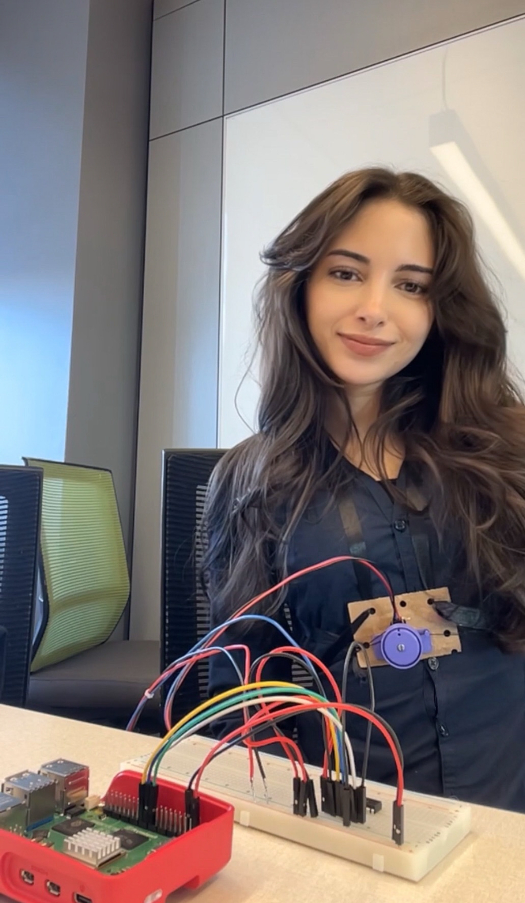
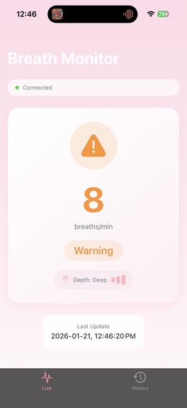
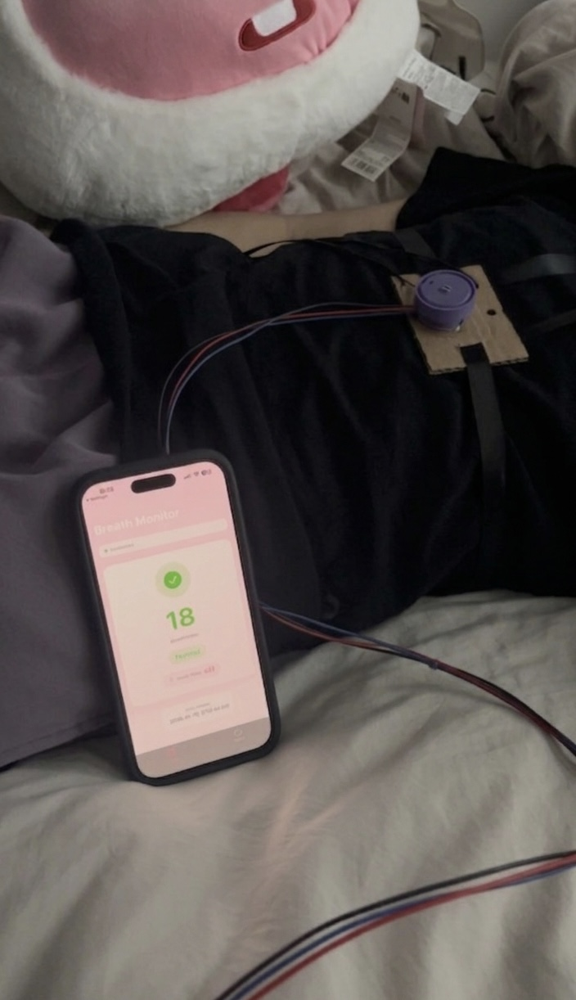
DeskClaw is an autonomous robot assistant designed to bridge the gap between digital intelligence and physical labor. While traditional AI agents are confined to screens, DeskClaw provides a functional "body" to assist engineers and makers in the workshop when their hands are tied. The system acts as a real-time collaborator; you can vocalize design challenges to bounce ideas off the AI or ask for a second opinion on mechanical problems as it observes your workspace. By combining advanced computer vision with voice-activated intelligence, DeskClaw transforms from a simple tool into an active participant in the creative process.
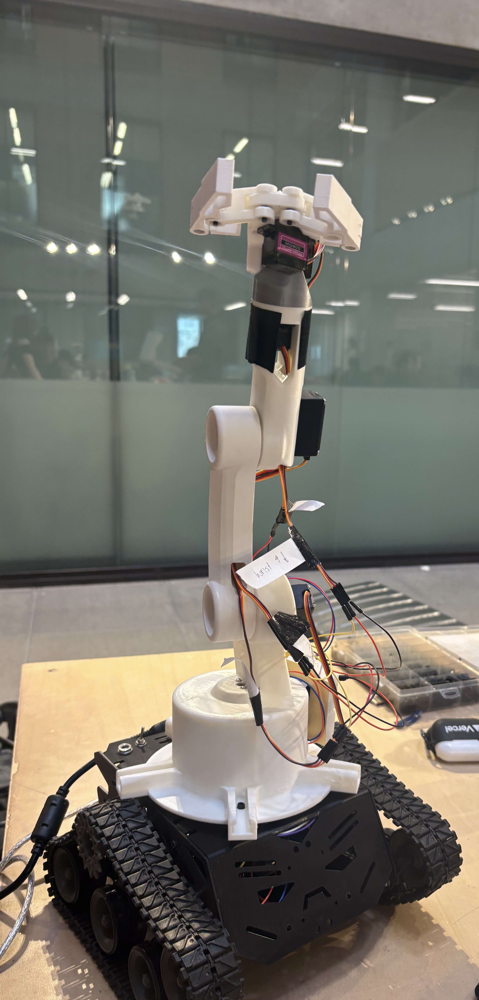
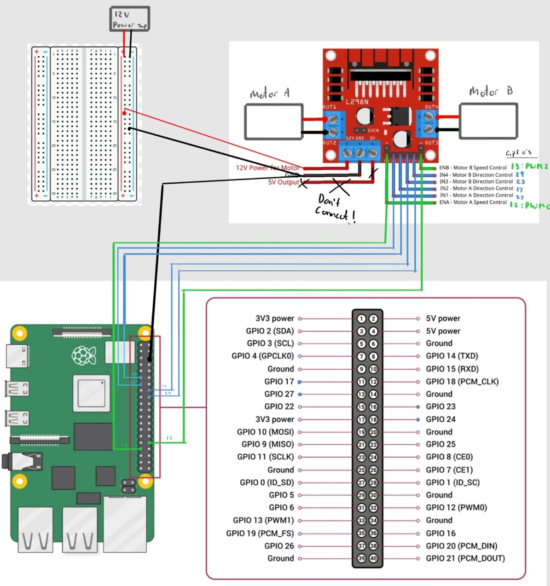
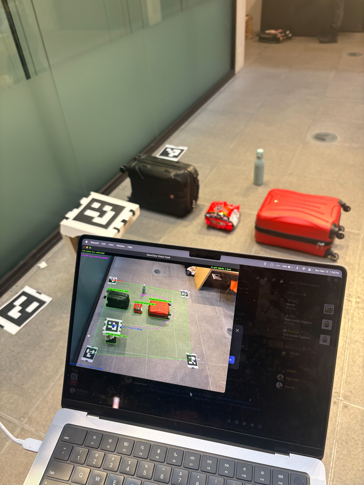
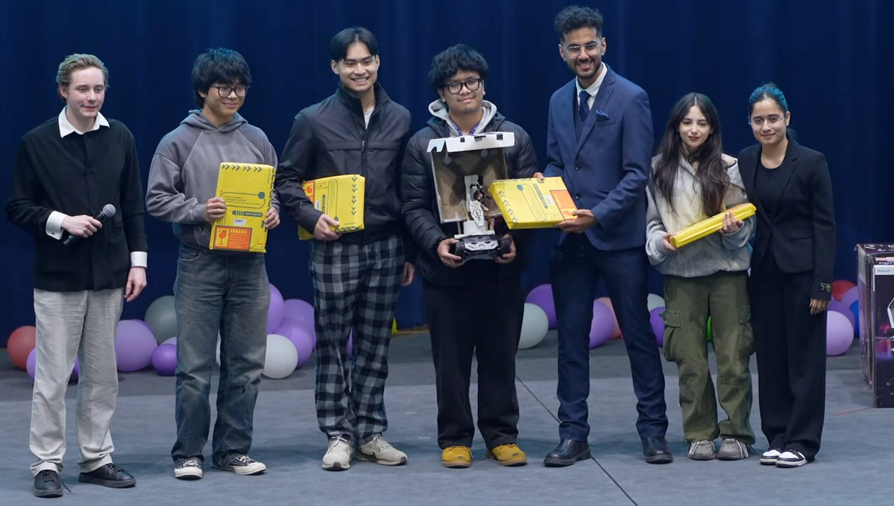
The 2026 Sustainable Design Competition (SDC) was a 5-hour engineering challenge where teams were presented with a surprise environmental scenario. The prompt involved a 20,000-liter industrial fertilizer spill near a northern Canadian community, threatening a Significant Groundwater Recharge Zone (SGRA) and a local freshwater spring. We were tasked with designing and assembling two distinct subsurface columns to remediate the site:
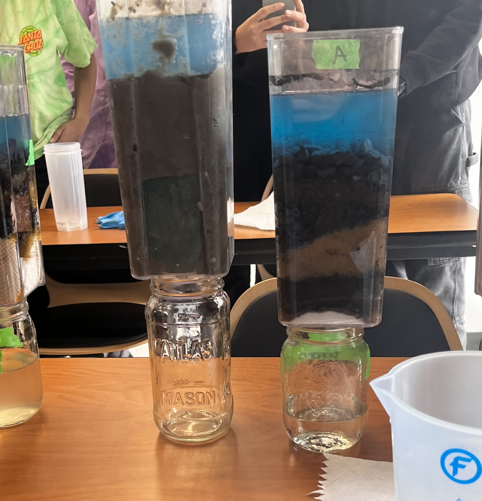
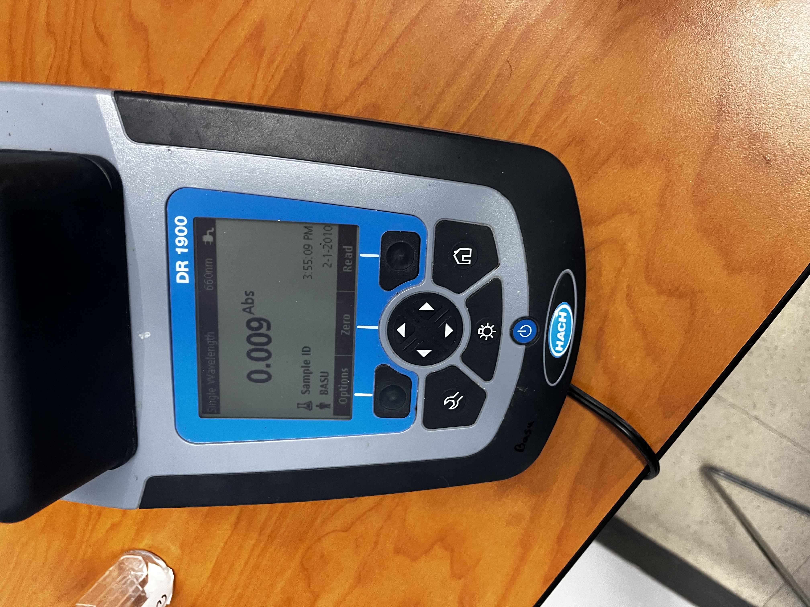
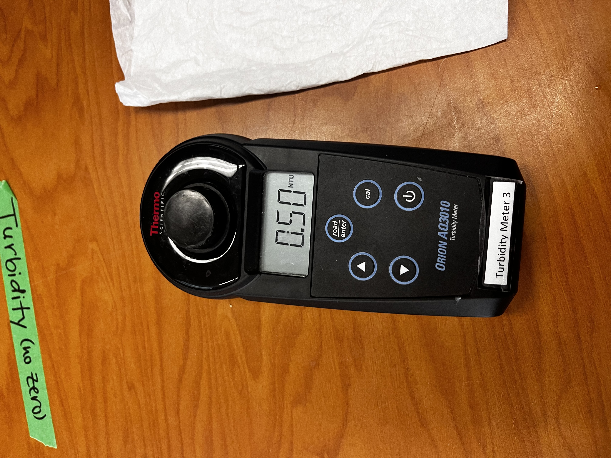
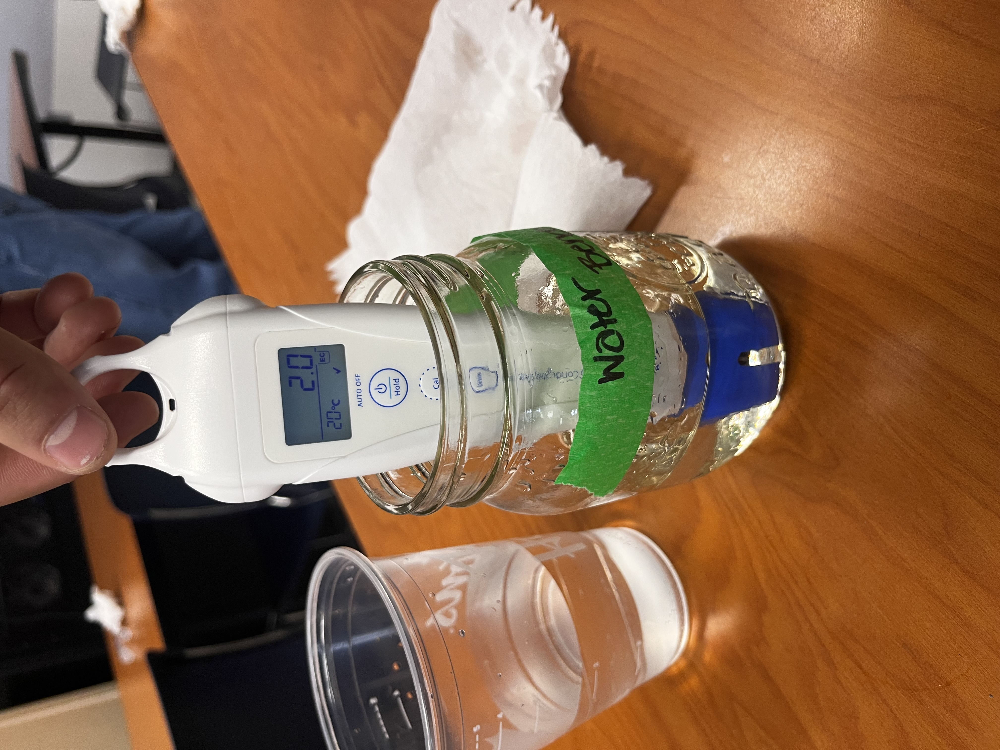
A functional miniature wind turbine designed and fabricated from scratch, converting rotational kinetic energy into real electrical output via a DC generator.
Standard VR controllers use "vibrations" (haptic feedback) to tell you that you’ve touched something. This prototype uses Force Feedback, which physically stops your fingers from moving when you "grab" a virtual object. It transforms a visual illusion into a physical sensation.
Open to internships, CO-OP positions, and interesting engineering collaborations. Feel free to reach out.